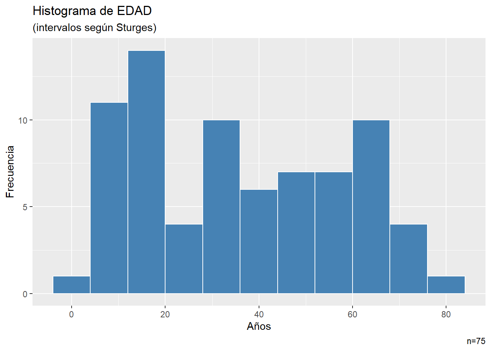
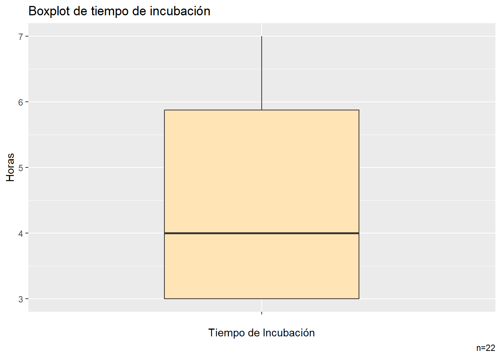
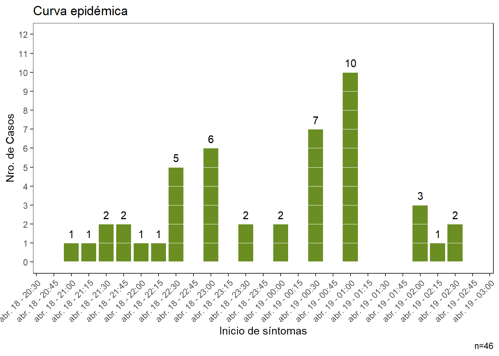

Rows: 75
Columns: 19
$ ID <dbl> 6, 7, 10, 18, 20, 22, 24, 26, 29, 31, 36, 38, 40, 44,…
$ EDAD <dbl> 63, 70, 33, 36, 33, 7, 3, 59, 37, 35, 35, 57, 68, 58,…
$ SEXO <chr> "F", "M", "F", "M", "F", "M", "M", "F", "F", "M", "F"…
$ HORA_COMIDA <time> 19:30:00, 19:30:00, 19:00:00, NA, NA, …
$ ENFERMO <chr> "SI", "SI", "SI", "SI", "SI", "SI", "SI", "SI", "SI",…
$ INICIO_SINTOMAS <chr> "18/04/2018", "18/04/2018", "18/04/2018", "18/04/2018…
$ HORA_SINTOMAS <time> 22:30:00, 22:30:00, 23:00:00, 22:15:00, 22:00:00, 23…
$ CARRE_CERDO <chr> "SI", "SI", "SI", "SI", "SI", "SI", "NO", "NO", "SI",…
$ ESPINACAS <chr> "SI", "SI", "SI", "SI", "SI", "SI", "SI", "SI", "SI",…
$ SALSA_TOMATE <chr> "NO", "SI", "SI", "NO", "SI", "SI", "SI", "SI", "SI",…
$ ENSALADA <chr> "SI", "NO", "NO", "SI", "SI", "SI", "NO", "SI", "NO",…
$ PAN <chr> "NO", "SI", "SI", "SI", "NO", "SI", "NO", "SI", "SI",…
$ LECHE <chr> "NO", "NO", "NO", "NO", "NO", "NO", "NO", "NO", "NO",…
$ CAFE <chr> "NO", "SI", "NO", "NO", "SI", "NO", "NO", "NO", "SI",…
$ AGUA <chr> "SI", "SI", "SI", "NO", "SI", "SI", "SI", "SI", "NO",…
$ TORTA <chr> "NO", "NO", "NO", "NO", "SI", "SI", "SI", "SI", "SI",…
$ HELADO_VAINILLA <chr> "SI", "SI", "SI", "SI", "SI", "SI", "SI", "SI", "SI",…
$ HELADO_CHOCOLATE <chr> "NO", "NO", "SI", "NO", "SI", "SI", "NO", "NO", "NO",…
$ ENSALADA_FRUTA <chr> "NO", "NO", "NO", "NO", "NO", "NO", "NO", "NO", "NO",…Practico sobre un brote alimentario
Residencia de Epidemiología
Introducción
La tabla de datos con la que vamos a trabajar en este práctico está basada en la investigación de brote sucedida en la aldea de Lycoming, condado de Oswego, Nueva York en 1940. La base de datos es conocida en el mundo de los software de análisis epidemiológico desde hace muchos años y lleva el nombre de oswego. (https://www.cdc.gov/eis/casestudies/xoswego.401-303.student.pdf)
En este caso está adaptada con fines docentes dado que no nos interesa el análisis del brote en particular sino tener un grupo de variables para aplicar recursos del ecosistema tidyverse.
Sobre la tabla de datos podemos decir que se trata del volcado de la recopilación de información sobre un brote de enfermedad gastrointestinal aguda ficticio sucedido en abril del 2018.
- Las observaciones responden a las 75 entrevistas de las 80 personas que asistieron a una cena.
- De estas 75 personas entrevistadas, 46 personas reportaron enfermedades gastrointestinales.
- La aparición de la enfermedad en todos los casos fue aguda, caracterizada principalmente por náuseas, vómitos, diarrea y dolor abdominal. Ninguna de las personas enfermas informó haber tenido una temperatura elevada
- Todos los afectados se han recuperado dentro de las 24 a 30 horas.
- El encuentro comenzó aproximadamente a las 18 hs y continuó hasta las 23 hs.
- El horario aproximado de ingesta se recolectó solo para la mitad de las personas que tenían la enfermedad gastrointestinal.
La tabla de datos tiene 19 variables y podemos descargar desde este enlace con el nombre de datos.csv.
Actividades
Usted es parte del equipo de epidemiólogos que conducen la investigación de brote y deberá realizar las siguientes actividades con los datos almacenados en este archivo.
IMPORTANTE: todas las actividades deben resolverse mediante código dentro de un script creado en un proyecto de RStudio donde haya descargado el archivo de datos.
Lectura de los datos
- Lea/importe el archivo
datos.csven un dataframe/tibble de nombre datos. Recuerde observar el archivo previamente con el fin de conocer su estructura, (por ejemplo: cuál es el caracter separador, etc) para completar los argumentos de lectura.
- Asegúrese que los tipos de datos de cada variable fueron bien reconocidos. Para que tenga una idea estos deberían ser:
Formateo de variables
Los primeros pasos generalmente están vinculados con darle formato adecuado a las variables que utilizaremos en análisis posteriores.
- En principio, tomaremos la variable SEXO que fue leída como caracter (chr) y la convertiremos en tipo factor. Además, en otro paso, recodificaremos sus niveles para transformarla los valores F en Femenino y M en Masculino.
Al solicitar sus niveles nos deberían de quedar así:
[1] "Femenino" "Masculino"- Continuamos con otra variable categórica que tiene cargado quienes enfermermaron y quienes no lo hicieron en este brote.
A la variable ENFERMO, también la convertimos en tipo factor y dejamos las etiquetas que tiene pero le vamos a modificar el orden de los niveles, para que queden así:
Categorías de ENFERMO: SI NO- Otra variable a la que debemos corregir su tipo es INICIO_SINTOMAS que contiene la fecha en que comenzaron los síntomas en los afectados por el brote alimentario.
Si solicitamos su clase encontraremos que fue interpretada, cuando se leyó, como:
[1] "character"Necesitamos que tenga formato fecha, con la estructura dmy (día,mes,año) y con nuestra zona horaria para que el tipo de dato sea POSIX.
Para asegurarse de utilizar nuestra zona horaria puede incorporar como argumento tz = Sys.timezone()
Finalizada la conversión deberíamos ver que la clase de INICIO_SINTOMAS es:
[1] "POSIXct" "POSIXt" Construcción de nuevas variables
Una tarea habitual en los análisis es construir nuevas variables que surgen del procesamiento de las variables recolectadas. (Definimos que los nombres de estas nuevas variables serán en minúsculas para diferenciarlas de las variables recolectadas que se encuentran en mayúsculas.)
6.- Comenzaremos con la variable EDAD a la cual categorizaremos para construir una nueva variable llamada gedad. Las edades de los encuestados tienen un rango de:
range(datos$EDAD)[1] 3 77Los intervalos del agrupamiento que deseamos constuir serán irregulares según el siguiente criterio:
| Intervalo | Etiqueta |
|---|---|
| EDAD > 12 | 1.Niño |
| 12 >= EDAD < 18 | 2.Adolescente |
| 18 >= EDAD < 30 | 3.Adulto joven |
| 30 >= EDAD < 65 | 4.Adulto |
| EDAD >= 65 | 5.Adulto mayor |
- Con la intención de calcular el tiempo de incubación promedio realizaremos una serie de pasos que comienza en la producción de un tibble nuevo a partir de la selección de los encuestados que poseen hora de cena (variable HORA_COMIDA) y hora de inicio de síntomas (HORA_SINTOMAS).
En la introducción decíamos que “el horario aproximado de ingesta se recolectó solo para la mitad de las personas que tenían la enfermedad gastrointestinal” y esto causa que las variables tengan algunos valores “missing” ( NA en lenguaje R).
Entonces necesitamos generar un nuevo objeto tibble que denominaremos datos_incu con las observaciones que tengan dato completo en las variables HORA_COMIDA y HORA_SINTOMAS.
Además, en la misma expresión o en otra subsiguiente, vamos a crear dos nuevas variables (siempre dentro de datos_incu):
- inicio: producto de la unión de la variable INICIO_SINTOMAS y la variable HORA_SINTOMAS, para producir una variable con formato date-time (es decir, que contenga fecha y hora del inicio de los síntomas)
- comida: producto de la unión de una fecha constante “2018-04-18” (que es la fecha de la cena) con la variable HORA_COMIDA, para producir otra variable con formato date-time (es decir, que contenga la fecha (18/04/2018) y hora de la ingesta de cada asistente a la cena)
La salida final debe ser de este tipo:
head(datos_incu[20:21])# A tibble: 6 × 2
inicio comida
<dttm> <dttm>
1 2018-04-18 22:30:00 2018-04-18 19:30:00
2 2018-04-18 22:30:00 2018-04-18 19:30:00
3 2018-04-18 23:00:00 2018-04-18 19:00:00
4 2018-04-18 23:00:00 2018-04-18 19:00:00
5 2018-04-18 23:30:00 2018-04-18 19:30:00
6 2018-04-19 00:30:00 2018-04-18 20:00:00Es decir, un tibble de 22 observaciones con las 19 variables originales más las dos nuevas que se muestran en la salida anterior.
- En este punto calcularemos los tiempos de incubación para cada observación de la tabla
datos_incu.
Aprovechando la potencialidad del paquete lubridate, este cálculo lo vamos a realizar con tres unidades diferentes y por lo tanto generaremos tres nuevas variables:
- tiempo: intervalo entre las variables comida e inicio expresado como período
- duracion: el mismo intervalo anterior expresado como duración
- incubacion: la longitud exacta del lapso de tiempo transcurrido entre la ingesta y el inicio de los síntomas. Esta variable surge de aplicar la función time_length() y definiendo como unidad la hora (argumento unit=“hour”).
La salida final debe ser de este tipo:
head(datos_incu[22:24])# A tibble: 6 × 3
tiempo duracion incubacion
<Period> <Duration> <dbl>
1 3H 0M 0S 10800s (~3 hours) 3
2 3H 0M 0S 10800s (~3 hours) 3
3 4H 0M 0S 14400s (~4 hours) 4
4 4H 0M 0S 14400s (~4 hours) 4
5 4H 0M 0S 14400s (~4 hours) 4
6 4H 30M 0S 16200s (~4.5 hours) 4.5Análisis descriptivo
A partir de las variables recolectadas y generadas en las dos tablas de datos, en este bloque, iremos respondiendo algunas preguntas que describan el brote.
- Construiremos un histograma de la variable EDAD para conocer su distribución. A fin de definir los intervalos de clase a utilizar puede asignar la función nclass.Sturges() al argumento bindwidth de
ggplot2. También puede usar cualquiera de las otras dos reglas ofrecidas por la función (Scott y FD).
El resultado debería ser similar a este:

- Trabajando sobre las 22 observaciones de
datos_incu, queremos saber:
- en qué semana epidemiológica sucedió el primer caso? (tomar la fecha de inicio de sintomas)
- cuál es el tiempo medio de incubación? (calcular la mediana)
- cuál es el rango intercuartílico del tiempo de incubación?
Los resultados serían:
Semana epidemiológica 16Mediana de tiempo de incubación 4 horasRango intercuartílico de tiempo de incubación 2.9 horas- A continuación construiremos un boxplot del tiempo de incubación (de las 22 observaciones de
datos_incu), similar al siguiente:

- En este punto deseamos calcular la frecuencia de consumo de alimentos para todas las personas (tabla
datos) por cada alimento y con esa información mostrar en una tabla la lista de alimentos consumidos ordenados de los más consumidos a los menos (orden decreciente).
El resultado podría ser:
# A tibble: 12 × 3
# Groups: alimento [12]
alimento n prop
<chr> <int> <dbl>
1 HELADO_VAINILLA 54 72
2 HELADO_CHOCOLATE 47 62.7
3 CARRE_CERDO 46 61.3
4 ESPINACAS 43 57.3
5 TORTA 40 53.3
6 SALSA_TOMATE 37 49.3
7 CAFE 31 41.3
8 ENSALADA 28 37.3
9 PAN 27 36
10 AGUA 24 32
11 ENSALADA_FRUTA 6 8
12 LECHE 4 5.33Notese que el porcentaje calculado para cada alimento refiere al total de asistentes a la cena (por ejemplo: encabeza el listado el 72 % de los asistentes consumieron helado de vainilla). No confundir con porcentaje entre categorías (alimentos) de la lista.
- Finalmente, calcularemos las tasas de ataque para los que comieron y no comieron cada alimento y la diferencia entre ellas, que nos permite observar cual podría ser el alimento involucrado en el brote.
La tabla ordenada en orden decreciente es similar a esta:
# A tibble: 12 × 4
alimento Tasa_C Tasa_NC Dif_C.NC
<chr> <dbl> <dbl> <dbl>
1 HELADO_VAINILLA 79.6 14.3 65.3
2 TORTA 67.5 54.3 13.2
3 PAN 66.7 58.3 8.34
4 ENSALADA_FRUTA 66.7 60.9 5.80
5 ENSALADA 64.3 59.6 4.72
6 CARRE_CERDO 63.0 58.6 4.42
7 SALSA_TOMATE 62.2 62.2 0
8 CAFE 61.3 61.4 -0.0700
9 ESPINACAS 60.5 62.5 -2.03
10 AGUA 54.2 64.7 -10.5
11 LECHE 50 62.0 -12.0
12 HELADO_CHOCOLATE 53.2 74.1 -20.9 El helado de vainilla aparece como principal sospechoso del brote con una diferencia de 65,3 entre las tasas de ataque.
Extra
Como elemento extra interesante para los estudios de brote incorporamos el código para la producción de una curva epidémica donde hacemos uso de la integración de algunas funciones vistas y a la vez profundizamos el nivel de complejidad (lo discutimos en clase).
library(scales)
datos |>
filter(ENFERMO == "SI" & !is.na(INICIO_SINTOMAS) & !is.na(HORA_SINTOMAS)) |>
mutate(inicio = as_datetime(paste0(INICIO_SINTOMAS,"-",
HORA_SINTOMAS))) |>
group_by(inicio) |>
summarise(casos = sum(n())) |>
ggplot(aes(inicio,casos)) +
geom_bar(stat = "identity", fill="olivedrab", color="white") +
scale_y_continuous(limits = c(0,12),
breaks = seq(0,12,1)) +
scale_x_datetime(breaks = date_breaks("15 min"),
labels = time_format("%b %d - %H:%M"),
limits = c(ymd_hms("2018-04-18 20:45:00"),
ymd_hms("2018-04-19 02:45:00"))) +
geom_hline(yintercept = seq(1, 10, by = 1),
colour = "white", size = 0.3) +
geom_text(aes(label = casos), nudge_y = 0.5, color = "black") +
labs(x = "Inicio de síntomas", y = "Nro. de Casos",
title = "Curva epidémica", caption = "n=46") +
theme_bw() +
theme(panel.grid.major = element_blank(),
panel.grid.minor = element_blank()) +
theme(axis.text.x = element_text(angle = 45, hjust = 1))
Una vez finalizados todos los puntos guarde el archivo con el script y envíelo por mail a christianballejo@gmail.com